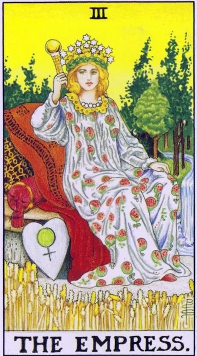

Major Arcana · III
IIIThe Empress
Everything grows when it is cared for: abundance, creativity, sensuality, and the maternal warmth of life; ideas and relationships yield yields if they are patiently nurtured rather than rushed to another’s schedule.
Archetype and core meaning
The Empress sits among ripe wheat, at her feet is a sickle moon, her dress is embroidered with pomegranates. The Venusian nature of the card speaks in the language of growth: a garden that is watered, a child that is loved, an idea that is allowed to ripen. After the priestess' silence, this is the first loud yes to life - generous, bodily, earthly.
Like an archetype, it connects mother, hostess and creator: the same principle nourishes both the living and the hand-made. In the Empress's case, the sign of harvest and pregnancy, whether literal or creative: the project has gained juice and will soon be born. The card reminds us that abundance does not come to those who are ashamed to want; to feed others, you need to be fed yourself.
Daily life
A day of bodily pleasure and simple joy: cook, host, bring beauty to the house, walk where green is. It's good to buy things for comfort, plants, products from the market, not from the list. Care for loved ones today comes back a hundredfold - but put yourself on the same list of care.
Work and career
In the Empress case, it's a growth project that requires regular care, not a leap: team, budget and customer relationships need to be watered like beds. Creative jobs, catering, beauty, education, all things that make people's lives more enjoyable. The card advises the gardener's style: create conditions, not push deadlines.
Relationships
One of the great cards of family happiness is tenderness, sensuality, the desire to indulge and be spoiled. For couples thinking about children, the Empress traditionally promises conception; for everyone else, a period of honey heat even years later. The card advises single people to go out of their heads into their bodies: taste, smell, dance and touch bring to life those whom the mind would not allow. Beware of turning care into service for a partner, love does not work on the principle of a buffet with free supplements.
Health
The card is good: the body recovers, the treatment is gentle, the body responds gratefully to care. Especially good natural nutrition, massage, water treatments — all the pleasant and useful things at the same time. When planning pregnancy, this is one of the strongest indications of the deck. The flip side is the tendency to excess: sweet, feasting, relaxation; pleasure works in dose, not infinity, so indulge yourself consciously.
Spiritual meaning
The Dalet Way, the doorway, connects Hokma and Bina: life comes into shape through the gates of love. Venus makes the Empress the patroness of fertility in every sense, from crops to inspiration; her elements are land, water and everything that blooms. In practice, arcana is used to bless the home, attract wealth, sanctify gardens and any endeavors associated with growth. Meditation on her returns the basic trust of the world feeds me, the soil from which real generosity grows.
Distortion in care: hypercare and dissolution in other people's needs strangle loved ones - or there comes a creative drought, and life is put on its own, forgotten by its own tired hostess.
Archetype and core meaning
The upside down Empress is a failure in the mechanism of feeding life. The first option is hyper-care and dissolution in other people's needs: the person is so busy with the role of "feeding" that he forgets to eat; help becomes control, and generosity becomes the eternal duty of another; the second is creative drought: ideas are not fertilized, the body is sluggish, joy is replaced by the list of duties and other people's expectations.
Often, the card indicates a disregard for one's own physicality: sleep, food, rest and touch are put off for later, and the soil of life is exhausted. Arcana suggests going back to the basics: cook delicious, sleep, say no to excess work. The fruit does not ripen according to the schedule of other people's demands - restore the land, and the growth will resume itself.
Daily life
In everyday life, when care is stalled: the house is cluttered, food is on the run, loved ones receive irritated notations instead of warmth. There is a possible reverse skew — a day completely eaten by other people's requests: you are like a babysitter, a courier and a support service in one person. Put simple order: one hour on yourself without guilt, normal food, the rejection of even one imposed role. The house comes to life after the owner, not the other way around.
Work and career
Professionally upside down Empress is project stagnation and team burnout: resources are invested and no growth is due to everything but the main one being watered. To the manager, the card points to micromanagement: employees choking under care and learning to think for themselves; to the creative professions, she promises a block — drafts without finalities, ideas without courage; the cure — delegation, priorities and honest vacation: harvest is not harvested from depleted land.
Relationships
In relationships, the card depicts a suffocating love: the partner is decided, fed, tested — and slowly suffocates; or the reverse picture is indifference, when loved ones live next to someone who has long been unaware of their needs; for single people, it indicates dependence on the opinion of relatives or ex: the heart is occupied with an old attachment, and the new one does not fit.
Health
The card shows the physical consequences of self-starting: excess weight from eating stress, swelling, lethargy, exacerbations against the background of chronic sleep deprivation. Women may have cycle failures and signs of reproductive depletion - an excuse to visit the doctor, not for the heroic "go away." Start with the simple: sleep, eating according to regime, movement for pleasure and one honest conversation with the doctor.
Spiritual meaning
The spiritually upside down Dalet is a door hammered on either side: fear of receiving or fear of giving. The card points to a distortion of the Venusian principle: love has become a bargain (“I care, you must”) or self-punishment (“I can’t, not everyone can’t, yet”). The healing practice is simple and bodily: delicious food without guilt, body care, beauty around — as a ritual of acceptance of the world.
🌿 In brief
The main idea
The Empress is fertility: the ability to make big out of small. It's connected to nature, matter, body, beauty and femininity, and it's a force that can grow, multiply and make the space around it a place of life.
How it manifests
The Empress is friendly, sensual, cozy, and has a lot of motherly instincts: to feed, to warm, to protect, to regret.
Work and money
It's a very fertile financial ground. It's not necessarily a profit already made, but rather an environment in which money can grow.
In a relationship
Love, sexuality, care, motherhood, pregnancy, children.
The shadow side
The main word here is too much. Too much pleasure, too much money, too much food, too much sex, too much shopping, too much attention. Fertility becomes sprawl, care becomes stifling care, and love becomes promiscuous.
Feature of the school
The Empress is connected to Taurus, the second house, and Venus, and she creates the material, and the next arcana learns to organize it.
📜 In detail — lecture extracts
Essence of the card
The core of the card is fertility: the ability to make a big little bit of it — people, money, material things. It's a manifest, manifested femininity tied to the fleshly sense of the world (Taurus, second house, Venus/Aphrodite): an earthly paradise where "milk rivers, sour banks." The card always plays in tandem with the Emperor — "Mother loves, Dad educates": to have something to organize, first you have to grow. The main thing in the card is the sensation, the specific divinatory values in it are secondary ("This approach is an Instagram-graspectioned and run").
Upright position
- Social, relationships:
- Femininity, sexuality, affability – Mother Nature loves everyone, is the same with all her children.
- Fashion, talkativeness, the ability to find common interest: female consciousness is “socially prescribed” from the cave (the woman had to negotiate with her neighbors, the husband “bring a spotted skin, or I am not like people”).
- Patronage: motherly feeling, often directed at a man, is included - to feed, warm, caress, sometimes sleep out of pity for the "poor sufferer"; this gives the wrong connection "strong woman - weak man."
- The man with this card is a gentleman: soft, courteous, a little feminine, always loving ("sex is her middle name"). Minus - promiscuous: "no matter who, as long as it tastes good."
- Mother, the influence of the mother, everything that is transmitted by the female family ("household witchcraft" - from grandmother to granddaughter). For a man, it means mother - and then "ask Freud": a man seeks a woman in the ideal image of his mother, "the search for a lost paradise."
- Work, finance:
- High office: governs on par with the emperor; potentially rich situation
- Money is not a guarantee of earnings, but fertile soil: “if you stick a dry stick, it will be stabbed”; a direct card speaks of multiplication of funds.
- Banks (growth of finance, interest), real estate, savings.
- Pregnancy is one of the main values, but it falls out infrequently.
- Self-development:
- Creativity is creative, decorative: not radically new, but a “large amount of something beautiful” that adorns life – Art Nouveau/Modern, Alphonse Fly, carved chair.
- - Physicality: yoga as a calm "lazy" physical education for the body, the development of natural taste, "the triumph of the human body."
- - card of the day: to give money in growth (moderately!), rest, treats ("eat ice cream, but not a bucket of ice cream"), children, revealing the female essence; a man - to communicate with his mother. To spend / to buy - bad: easily enters into rage "and this will buy, and it will buy."
Negative meaning
- The school’s formula is: exaggerating the quantity, going to extremes – “the same thing, but too much, too tasty, too sweet.”
- - Caprices "on the level" ("I don't want, I don't know"), excessive emotionality and changeability - physiology and hormones give a whiny moody tone.
- Excessive femininity at an inappropriate age and position: makeup abuse at 70, “dresses like a teenager,” married lives as free.
- Love as a minus: betrayal (Aphrodite secretly led Ares under the nose of Hephaestus), nymphomania - the same mechanism "more, more, more", up to "Venereal".
- Greed, hoarding, addiction to wealth: "Stupid boy, can there be too much money?" "you'll be strangled, you'll think about it"; "you'll be teltzow gathering for more."
- Excessive fertility of nature - ivy, exciting city (I'm a legend), "too many mouths in the family."
School emphases and distinctive points
- Waite: “a great figure ... daughter of heaven and earth”; 12 stars of the tiara = 12 signs of the zodiac; scepter with a ball = earthly world; not Regina Coeli (the queen of heaven), but “the refuge of sinners”, “the blessed mother of many thousands” (grains of wheat); pomegranates – a lot of seeds; sitting half lying on soft pillows, a pregnant posture that must be protected.
- - Astrology: Taurus, second home, Venus + Chiron; the system took Yuri Khan ("I licked a lot, but he went more into mythology, and he went more to astrology"); astro + Tarot = "stereoscopic vision." Chiron - father's duality: "like a good dad, but in fact a predator who can bite a tiger." Chronos ... the key of the father is "key to the outside world."
- Mythology: Aphrodite is wilder and more natural than Venus (like Ares the wild of Mars), Aphrodite's belt is love, desire, words of seduction: a man looks in a neckline, "brains are turned off, I want everything here." Athena found Aphrodite behind a spinning wheel - never worked again: a woman giving birth should not work, hence the problem of conception in modern women living "Martian"; all female cults merged into the Virgin: Aphrodite's shell became a sign of purity and purity, and purity, a Demodroskaya - a grenadetsa (atrix) - a corne, a grenadetress - a corner's - a corner's (atrix - a corner's corner's corner's corn - a cornemas - a cornemas - a s - a cornemasteremas - a cornege, a cornegee - a corner's - a corner's - a cornegeotogeegeologist - a ).
- - Slavic series: Mother Cheese Earth, identification with the Virgin; conspiracy birch "down the branches, up the roots" - The Virgin "blood wounds sewn up."
- Modern mythology: Astarte in the American Gods (owns the forces of nature, a sorceress, charmed Odin himself), Cameron’s Avatar (the mother planet, the tree-neuronet, the biosystem protects children), Maleficent with Angelina Jolie (evil but fair, raising a child, a sex symbol under Venus).
- - Disputes about Aries: the lamb of the emperor's head is either a Masonic hoax or Waite's mistake; the Emperor himself has Hephaestus - order, a square throne; Mars / Aries - a warrior "take by force", not to be confused.
- - A couple of cards: female bosses in business suits are already emperors, "don't confuse the Empress and the Emperor"; without an emperor, she is hard - she has to hammer nails herself and educate strictly.
- Practices: to hold a printed card of correspondences before your eyes, to add twenty-first values, to teach others to learn; time is guessed individually (3, 9 months, 12, thousand – but this is an innumerable set).
Keywords
- Fertility · increase in number · motherhood, “mother of many thousands” · manifest femininity · sexuality, loveability · fleshly sense of the world · wealth, accumulation · friendliness, patronage · Taurus / Venus · “mother loves, father educates”.
- ---